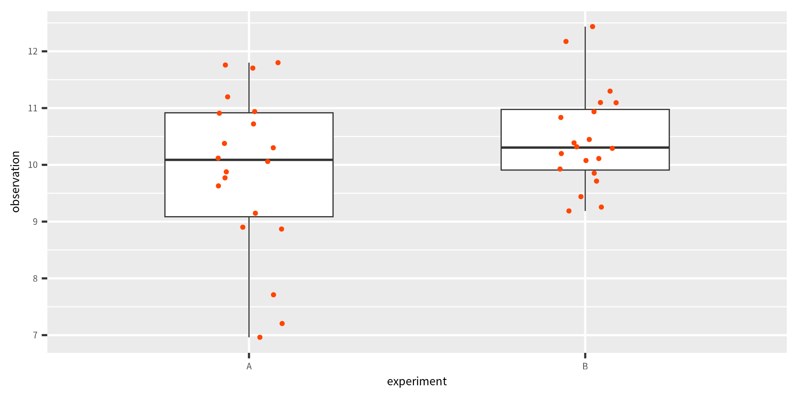
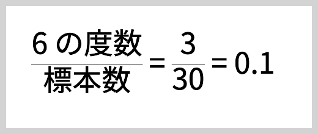
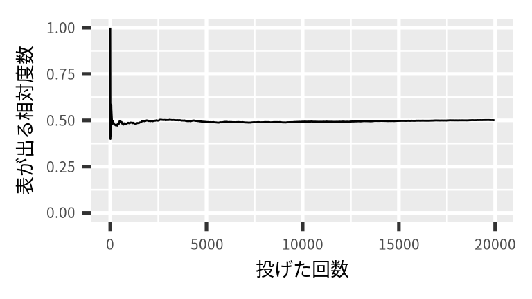
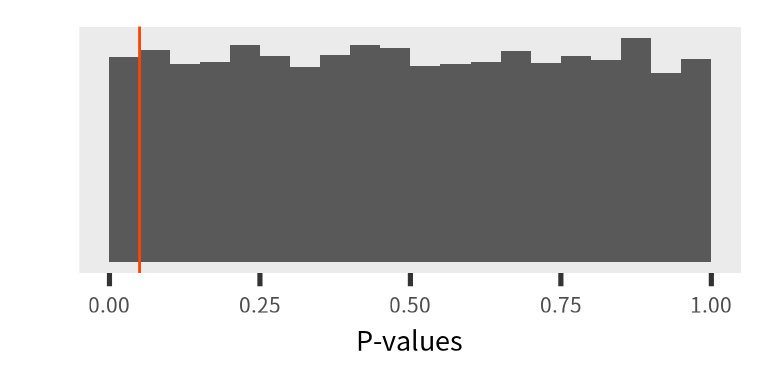
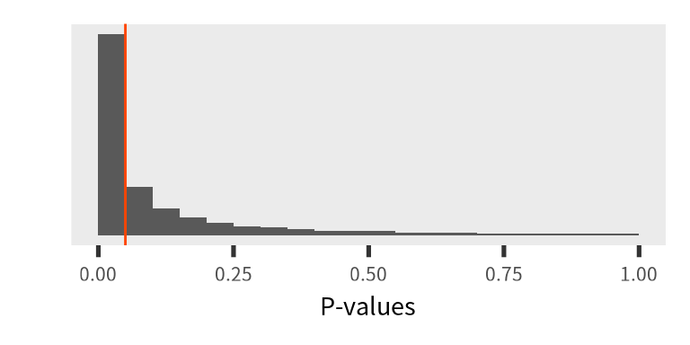
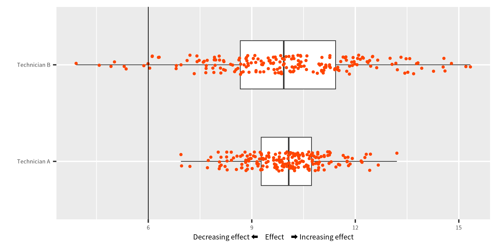

大数の法則と
中心極限定理
中心極限定理
Greg Nishihara
2024 / 07 / 07
Law of large numbers
度数 (frequency)
度数（頻度）とは
ある標本で特定のデータの値が得られた回数。 相対度数は標本数に対する度数の割合です。
{3, 1, 5, 1, 4, 2, 5, 2, 3, 2, 6, 3, 3, 1, 3, 4, 1, 4, 4, 2, 1, 6, 1, 1, 1, 2, 1, 2, 6, 4} に対する 6 の度数は 3 です。
相対度数は
です。
コイン投げの例

フェア (fair) なコインを投げた場合、表が出る確率は 0.50 です。 では、コインを 100 回投げた場合、 表がでる相対度数は 0.50 でしょうか。
コイン投げの例
今回の実験では、 表が出る度数が 0.50 に収束するためには、 おおよそ 15,000 回投げました。
コイン投げの回数が少なければ（小数） 表が出る確率と相対度数に大きな違いがありましたが、 投げる回数が増えると（大数）相対度数と確率の違いは小さくなりました。
大数の弱法則
Weak law of large numbers (大数の弱法則)
平均値 \(\mu\)、 分散 \(\sigma^2\) の分布にお互いに独立に従う 確率変数 \(X_1, X_2, \cdots, X_n\) と、任意の \(\varepsilon > 0\) の場合、
\[ \lim_{n\rightarrow\infty} P \left(\left |\frac{X_1+X_2+\cdots+X_n}{n}-\mu\right | < \varepsilon\right) = 1 \]
つまり、標本平均と母平均の差が \(\varepsilon\) 以下になる確率は 試行回数 \((n)\) を増やせば \(1\) に確率収束 (stochastic convergence) すると意味します。
大数の強法則
Strong law of large numbers (大数の強法則)
\[ P \left(\lim_{n\rightarrow\infty} \frac{X_1+X_2+\cdots+X_n}{n}=\mu \right) = 1 \]
観測回数が増えるにつれて、標本平均は概収束（ほとんど確実に収束; almost sure convergence）に従って母平均に収束します。
平均値のデモ
標本 (y) は 0 から 1 の一様分布に従う確率変数です。 点は y の観測値、線は y の累積平均値（標本平均）です。 標本数が増えれるにつれて、y の標本平均（線）は母平均 (μ = 0.50) に収束する。
Central limit theorem
一回の実験に２個のサイコロを４９回投げました。 実験は 215 回繰り返して行い、実験ごとに２個のサイコロの和の平均値を求めました。 標準平均から母平均（７）を引いたあと、標本の標準偏差で割りました \((Z = \frac{x_i - \overline{x}}{s})\)。 もとのデータの分布は正規分布ではないが、平均値は正規分布に従っています。
一回の実験に 1 個のサイコロを４９回投げました。 実験は 215 回繰り返して行い、 実験ごとに 1 個のサイコロの出目の平均値を求めました。 標準平均から母平均（3.5）を引いたあと、標本の標準偏差で割りました \((Z = \frac{x_i - \overline{x}}{s})\)。 もとのデータの分布は正規分布ではないが、平均値は正規分布に従っています。
Central limit theorem (中心極限定理)
中心極限定理とは、多数の独立かつ同一分布に従う確率変数の 平均値の分布が、一定の条件下では、正規分布に近似することを示す。
データの分布に関わらず、データの平均値を大量に求めると、 その平均値自体が正規分布に近似することが期待できる。 平均値は、正規分布に従うことで、母集団の平均値や分散についての 推論ができるようになる。
統計学において非常に重要な定理です。
中心極限定理
\[ \lim_{n\rightarrow \infty}\sqrt{n}\left(\frac{\overline{X}_n - \mu}{\sigma}\right) \xrightarrow{d} N(0, \sigma^2) \]
標本数 \(n\) が無限大に近づくにつれて、\(\sqrt{n}\) と \(\frac{\overline{X}_n - \mu}{\sigma}\) の積は、平均 \(0\)、分散 \(\sigma^2\) の正規分布に近づくことを意味します。
- \(\overline{X}_n\) は標本 n の標本平均値です。
- \(\xrightarrow{d}\) は法則収束または分布収束 (converges in distribution) と意味します。
Scientific Method
Scientific Method (科学的方法)
合理的に研究をするためには、科学的方法を用います。 科学的方法には6つのステップがあり、切り返して行うことが一般的です。
- 観察：まず、自然界を観察します。
- 質問：観察した自然現象について、科学的に検証できる（実験）課題を考えます。
- 仮説：仮説は、質問に対する合理的な推測です。実験で検証できるものです。
- 実験：実験を行い、考えた仮説が正しいかどうかを確認します。ここでデータ収集します。
- 分析：実験で得たデータを統計学的に解析します。データは、考え上げた仮説を支持するか否定するかを検証します。
- 結論：仮説が支持された場合は、考え上げた仮説が現段階で正しいと結論つけられますが、否定された場合は、仮説を修正するかまたは新たな仮説を開発します。
Hypothesis (仮説)
- 仮説は実験を行う前に決めるもの。データ見てから仮説を決めません。
- 一般的には、仮説を証明（採択）したいが、統計学の視点から考えると、仮説は棄却するものです。
仮説を証明（採択）することはできません。仮説は棄却するものです。
Model (モデル)
- モデルはデータを見てから考えるもの。
- モデルも検証する必要があります。
- モデルは予測に使用できます。
有意性検定および仮説検定
Significance testing (有意性検定論)
- 1920年代に、R.A. Fisher が提案した。
- 帰無仮説 \(H_0\) に対して集めたデータを得られるエビデンス（証拠）。
- P値が小さいとき、エビデンスは弱い
- \(\text{P-value} = P(T(X) \ge T_0(X)|H_0)\)
- 仮説の棄却や採択はしない
Hypothesis testing (仮説検定論)
- 1930年代に、 J. Neyman と E.S. Pearson が提案した。
- 最も使われている手法
- 帰無仮説 \(H_0\) と対立仮説 \(H_A\)を定義します
- 有意水準 (significance level \(\alpha\)) を基準にして、 \(H_A\) の採択または棄却をする手法。
The P-value and Hypothesis Test
What is the P-value (P値とは)?
統計解析をすることで、P値を求めることは当たり前のようになりました。
\[ \text{P-value} = P(T(X) \ge T_0(X)|H_0) \]
- 帰無仮説 \(H_0\) にたいして、\(T(X) > T_0(X)\) がおきる確率
- 帰無仮説に対して、収集したデータの整合性を指標科した値
- P値は 0 ~ 1 (\(0 \leq \text{P-value} \leq 1\)) の範囲をとる。
- 帰無仮説が正しいとき、P値は一様分布に従う。
- 帰無仮説が正しくとき：\(\displaystyle \lim_{n \rightarrow \infty} P \rightarrow 0\)。
帰無仮説は正しいときのP値
帰無仮説が正しいとき \(((\mu_0=50) = (\mu_A=50))\)、 P値は一様分布に従います。 実験を10万回繰り返し実施たとき、 \(P(\text{P-value}<0.05) = 0.0501\)でした。
帰無仮説は正しくないときのP値
帰無仮説は正しくないとき \(((\mu_0=50) \ne (\mu_A=51))\)、 P値は一様分布に従いません。 実験を10万回繰り返し実施たとき、 \(P(\text{P-value}<0.05) = 0.5604\)でした。
仮説検定
仮説検定は客観的に意思決定をするために使います。
- P値は帰無仮説と対立仮説を比較するために使います。
- 帰無仮説を棄却するルールは有意水準を用いて行います。
- \(\text{P-value} \leq \alpha\) のとき帰無仮説を棄却します。
- 帰無仮説を棄却・採択することで、誤りを起こすことになる
- 第１種の誤り, α過誤 (Type-I error)
- 第２種の誤り, β過誤 (Type-II error)
帰無仮説に注意
Neyman-Pearson の仮説検定法は Null Hypothesis Significance Test (NHST) (帰無仮説の有意性検定) といいます。 意思決定をするための手法なので、誤りを起こすこともある
- Type-I Error (第１種の誤り): 帰無仮説が正しいのに、帰無仮説を棄却する誤り。誤る確率は \(\alpha\) （有意水準と同じ値）
- Type-II Error (第２種の誤り): 帰無仮説が正しくないのに、帰無仮説を棄却しない誤り。誤る確率は \(\beta\)（単純に求められない）
帰無仮説に注意
- \(\alpha\) 有意水準および第1種の誤り
- \(\beta\) 第2種の誤り
- \(1-\beta\) 検定の検出力、正しくない帰無仮説を棄却する確率
- 第1種の誤りを厳しくすると、第2種の誤りはあまくなる (お互いに反比例する)
\[ \alpha \propto 1/\beta \]
第１種と第２種の誤り
有意性検定と仮説検定の違い
Significance testing (有意性検定)
- Fisher の手法
- P値の値は重要
- 帰無仮説を棄却するために使う
- データを見てから計算する
- 解析したデータのみに有効
- Subjective decision (主観的な判断)
- エビデンスによる意思決定
NHST (仮説検定)
- Neyman and Pearson の手法
- 第1種の誤りが重要
- 第1種と第2種の誤りを最低限にする
- データを見てから、α と β を選ぶ
- 実験は十分に反復されており、今後も似たようなデータを期待できる
- Objective decision (客観的)
- ルールに基づいた意思決定
Introduction to the Null Hypothesis Significance Test (NHST)
Example
Welch Two Sample t-test
data: observation by experiment
t = -1.4885, df = 31.452, p-value = 0.1466
alternative hypothesis: true difference in means between group A and group B is not equal to 0
95 percent confidence interval:
-1.3181200 0.2055077
sample estimates:
mean in group A mean in group B
9.897632 10.453938 - \(H_0: \overline{\mu_A}=\overline{\mu_B}~:\text{Null hypothesis}\)
- \(H_1: \overline{\mu_A}\neq\overline{\mu_B}~:\text{Alternative hypothesis}\)
- True standard deviation：\(\sigma_A=\sigma_B\)
- True mean: \(\overline{\mu_A}=10\) and \(\overline{\mu_B}=12\)
- In this case, \(P = 0.1466 \nless \alpha = 0.05\)
Amerhein et al. 2019. Nature 567: 305-307
Let’s be clear about what must stop: we should never conclude there is ‘no difference’ or ‘no association’ just because a P-value is larger than a threshold such as 0.05 … –Amerhein et al. 2019

P値は 0.05 より大きい場合、「違いはない」、「実験の影響はない」、 「関係性はない」のような解釈は誤りです。
\(P>0.05\) は、帰無仮説を棄却するほどの情報量がないだけを意味します。 決定的に実験の効果がないまでは言えませんが、効果がなかったことについては丁寧に考察する必要はあるでしょう。 帰無仮説を棄却したときも同じように疑いながら結果の考察は重要です。 たまたま棄却できたときもあります（第２種誤り）。